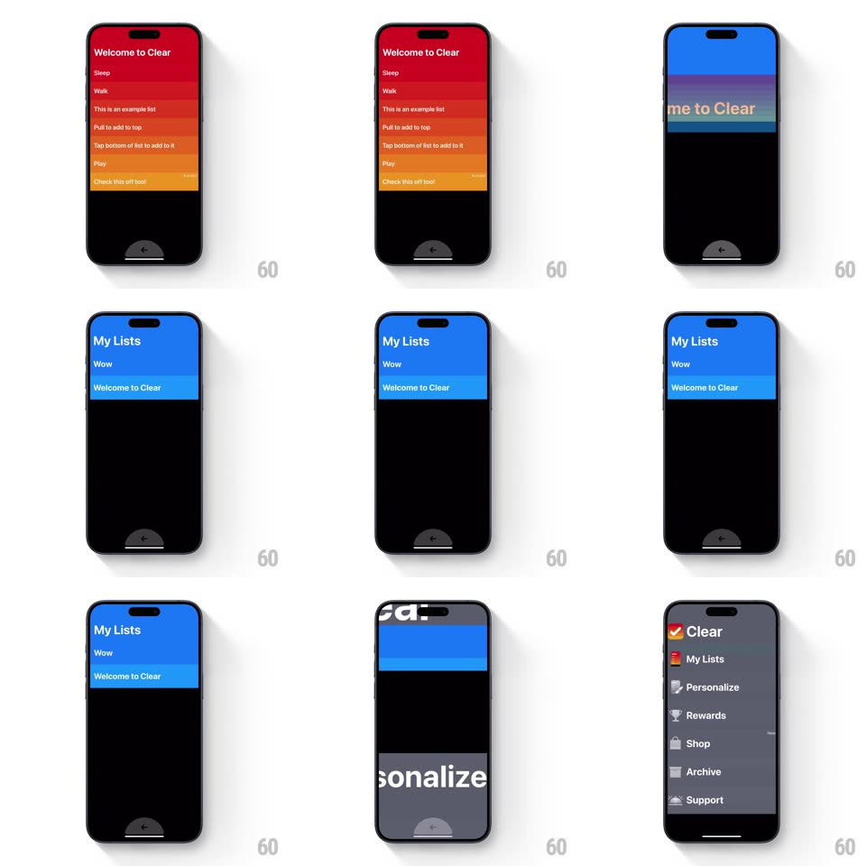

Media
Frame-by-frame

Rebuild this interaction 1:1: Clear's pinch-out navigation - pinching a list zooms straight through it into the list-of-lists view, and pinching again lands on the main menu, each level scaling continuously through the last.

Rebuild this interaction 1:1: Clear's pinch-out navigation - pinching a list zooms straight through it into the list-of-lists view, and pinching again lands on the main menu, each level scaling continuously through the last. ## Integration Integration: stack-agnostic spec - springs given as stiffness/damping, timed motions as duration + curve; map every value to your framework and animation library of choice. ## Scene Three zoom levels sharing one canvas: the item list (red-to-orange heat rows), "My Lists" (blue-gradient rows of lists), and the main menu (dark gray, big type: Clear, My Lists, Personalize, Rewards, Shop, Archive). ## Motion spec Pattern: continuous pinch-zoom level morph. - Pinch out: the current level's rows scale up and spread as the pinch opens (1:1 with pinch scale); row labels grow past their bounds and fade, like zooming into the paper grain. - As the pinch passes a level threshold, the parent level resolves underneath: its rows scale from ~1.3 down to 1 with a soft spring (~300/22) and fade in, so the transition feels like falling upward through the stack. - Reverse pinch in dives back down the same path - the child level scales up from small, fully reversible at any point mid-gesture. - Each level keeps its own accent palette (heat red / list blue / menu gray), which crossfades with the zoom. ## Calibration - The gesture is scrubbable: no animation commits until the pinch clearly passes the midpoint between levels. - Text stays razor sharp through scaling - render at the final size and let transforms handle the zoom. ## Reduced motion Levels crossfade with a modest scale (1.1 -> 1). ## Don't miss - Mid-gesture you can see BOTH levels at once, one growing through the other - never a hard cut. - The menu level's oversized type slides in with a slight stagger after landing.